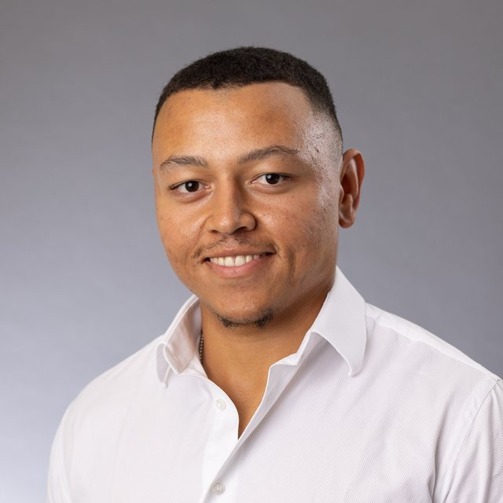

Steven Bossert
Ich bringe Struktur in technische Abläufe und sorge dafür, dass Menschen, Technik und Termine zusammenpassen.
Raum Zürich, Schweiz
Vom Triebwerk zum Prozess
Angefangen habe ich als Polymechaniker und in der Triebwerksinstandhaltung bei SR Technics. Dort habe ich gelernt, wie wichtig saubere Abläufe, klare Standards und gute Zusammenarbeit sind.
Heute verbinde ich diese technische Praxis mit Projektkoordination, Service Operations und Prozessoptimierung. Ich plane internationale Techniker-Einsätze, koordiniere Schnittstellen zwischen Kunden, Fachbereichen und Partnern und verbessere Prozesse Schritt für Schritt.
Meine Erfahrung stammt aus anspruchsvollen und regulierten Umfeldern wie Aviation, Medizintechnik und internationalem Technical Service. Seit Oktober 2026 bilde ich mich an der KV Business School Zürich zum Digital Collaboration Specialist mit eidgenössischem Fachausweis weiter.
Projektkoordination
Einsätze planen, Ressourcen und Termine abstimmen, Projekte auf Kurs halten.
Service Operations
Schnittstellen zwischen Kunden, Technikern und Partnern steuern.
Prozessoptimierung
Abläufe analysieren, standardisieren und digital weiterentwickeln.
Stationen
-
seit Okt. 2026
Weiterbildung
Digital Collaboration Specialist mit eidg. Fachausweis
KV Business School Zürich · berufsbegleitend, 3 SemesterWeiterbildung für die digitale Zusammenarbeit in Unternehmen und die Begleitung digitaler Veränderungen. Schwerpunkte:
- Agiles Projektmanagement und Veränderungsprozesse mit Scrum und Design Thinking
- Digitale Zusammenarbeit mit Kunden, Partnern und Lieferanten
- Unterstützung der digitalen Transformation im Unternehmen
- Wissensmanagement und Bereitstellung von Wissen in digitalen Tools
- Analyse und Auswertung von Daten, auch mit KI
- Content für digitale Medien und Optimierung digitaler Kanäle
-
Sep. – Okt. 2026
Weiterbildung
Coding Bootcamp „Piscine“
42 Zürich- Peer-to-Peer-Lernen, Teamprojekte und Coding Challenges
- C-Programmierung: Syntax, Datentypen, Funktionen und Schleifen
- Strings, Arrays, Pointer sowie Speicher- und Zeichenverarbeitung
- Kompilieren, Debugging und Code-Standards (Norminette)
- Unix/Linux-Shell, Algorithmen und Problemlösung
- Git: Versionskontrolle, Branching und Merging, Commit-, Push- und Pull-Workflows, Repository-Verwaltung
-
2024 – 2026
Technical Service
Service Operations & Project Coordination
Beck Automation AG, Dällikon · Juli 2024 – September 2026- Planung und Steuerung internationaler Techniker-Einsätze unter Berücksichtigung von Ressourcen, Terminen, Kundenanforderungen und technischen Abhängigkeiten
- Steuerung der Schnittstellen zwischen Kunden, Technikern, internen Fachbereichen und externen Partnern
- Organisation mehrsprachiger Briefings und Debriefings zur Sicherstellung effizienter Service- und Projektabläufe
- Analyse, Optimierung und Standardisierung operativer Abläufe sowie kontinuierliche Verbesserung globaler Serviceprozesse
- Mitarbeit in internationalen Teilprojekten und Initiativen zur digitalen Transformation
- Erstellung und Aufbereitung von Prozessdokumentationen, Arbeitsunterlagen, Auswertungen und Entscheidungsgrundlagen
Technischer Support und Anlagenmodifikationen · Juli – Dezember 2024
- Bearbeitung technischer Störungen
- Verkauf, Planung und Koordination von Anlagenmodifikationen
Ersatzteilvertrieb und Auftragsabwicklung · Januar – Juni 2024
- Kundenbetreuung
- Verkauf von Ersatzteilen und Abwicklung der Ersatzteilaufträge
-
2020 – 2023
Medizintechnik
Production & Quality Operations
Roche, Rotkreuz · Dezember 2020 – Juli 2021 und Mai 2022 – Juni 2023- Mitarbeit in einem regulierten Produktionsumfeld mit hohen Qualitäts- und Prozessstandards
- Unterstützung bei Mitarbeitertrainings und standardisierten Arbeitsabläufen
- Arbeiten nach GMP-Richtlinien und strukturierten Qualitätsprozessen
- Präzise und effiziente Umsetzung standardisierter Produktionsabläufe
-
2016 – 2020
Aviation
Polymechaniker & Aircraft Engine Mechanic
SR Technics, Kloten · Lehre 2016 – 2020, Triebwerk ab 2018- Technische Instandhaltung und strukturierte Arbeitsausführung im Aviation-Umfeld
- Arbeiten nach definierten Sicherheits-, Qualitäts- und Prozessstandards
- Teamübergreifende Zusammenarbeit in technischen Abläufen
- Grundlagen in Prozessdisziplin, Problemlösung und technischem Qualitätsverständnis
Abschlüsse
- Digital Collaboration Specialist mit eidg. Fachausweis
- Höheres Wirtschaftsdiplom
- Projektmanager edupool.ch
- Polymechaniker EFZ
- First Certificate in English (B2)
Sechs Sprachen
Neben dem Beruf
- Jugendkommission, Ressort Veranstaltungen
- Zivildienst in der Betreuung von Jugendlichen und Erwachsenen
Lass uns sprechen
Du suchst Unterstützung in Projektkoordination, Service Operations oder Prozessoptimierung? Schreib mir gerne eine Nachricht oder ruf mich an.